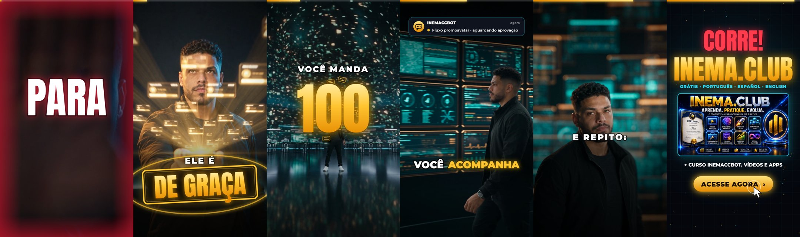

Transforme clipes, voz e uma ideia clara em um vídeo com cortes, palavras em destaque e som sincronizado.
O video-viral-9x16 é um kit de produção de vídeos verticais para quem cria conteúdo e quer controlar a edição por código. Ele reúne um motor de textos animados, legendas sincronizadas, montagem de cenas e mixagem de áudio. Você recebe um exemplo completo de 48 segundos e pode adaptar o roteiro e as mídias para outros temas. Para executar, precisa de Linux, Node.js, Python e FFmpeg; as mídias do exemplo já estão incluídas.
Os arquivos fornecidos foram organizados para você estudar, executar e adaptar. “Viral” descreve o estilo de edição; não é promessa de alcance.
O roteiro define gancho, benefício e chamada final. O project.json guarda cortes e tempos; scenes.js controla a apresentação.
Texto animado e legendas usam os tempos de cada palavra. A música abaixa durante a fala e os efeitos entram nas deixas.
Gere uma folha de prévias, valide entradas e confira a quantidade de frames do MP4. Escute e veja o resultado antes de publicar.
Uma ideia principal, um gancho rápido e uma ação final. Cada cena deve apoiar o que está sendo dito.
Recomendado: Linux, Node.js 18+, Python 3.10+ e FFmpeg com ffprobe. A instalação baixa dependências; o render usa arquivos locais.
Clone o repositório e instale as dependências Python em um ambiente isolado e o motor Canvas no Node.
# comando
git clone https://github.com/inematds/video-viral-9x16.git
cd video-viral-9x16
bash scripts/setup.shExecute os comandos a partir da raiz do repositório. O exemplo possui clipes, narração, trilha, efeitos e transcrição.
O validador verifica arquivos, continuidade dos cortes e tempos das palavras.
.venv/bin/python scripts/viral.py validate exemplo-inemaccbot-v2/project.json
Abra out/prev/review.jpg dentro da pasta do exemplo. Confira texto, rosto e contraste.
.venv/bin/python scripts/viral.py preview exemplo-inemaccbot-v2/project.json
O comando refaz trilha, base, mixagem, MP4 e revisão técnica. A interpolação de câmera lenta pode demorar. Cada etapa tem limite de 30 minutos.
.venv/bin/python scripts/viral.py build exemplo-inemaccbot-v2/project.json
A cópia inclui as mídias. Escolha uma pasta nova, depois altere textos em scenes.js e cortes em project.json.
.venv/bin/python scripts/viral.py new ../meu-video --example
Sem --example, você recebe um esqueleto que precisa ser preenchido. Adicione clipes, narração, música, SFX e uma transcrição com tempos por palavra.
.venv/bin/python scripts/viral.py new ../novo-video # Após preparar os arquivos: .venv/bin/python scripts/viral.py validate ../novo-video/project.json
48 segundos, 20 trechos na montagem, vídeo 1080 × 1920 a 30 fps. Conteúdo e mídias do kit original, em português.

O vídeo fica em exemplo-inemaccbot-v2/out/INEMACCBOT_v2_9x16.mp4. A folha técnica fica em out/qc/final_sheet.jpg. O QC informa loudness; a revisão humana deve conferir voz, música e legibilidade.
A geração de novas mídias é uma etapa separada, escolhida por você.